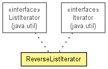

de.lmu.ifi.dbs.elki.utilities.iterator
Class ReverseListIterator<E>
java.lang.Object
 de.lmu.ifi.dbs.elki.utilities.iterator.ReverseListIterator<E>
de.lmu.ifi.dbs.elki.utilities.iterator.ReverseListIterator<E>
- Type Parameters:
E - Element type
- All Implemented Interfaces:
- Iterator<E>, ListIterator<E>
public class ReverseListIterator<E>
- extends Object
- implements Iterator<E>, ListIterator<E>

Reverse iterator for lists.
| Methods inherited from class java.lang.Object |
clone, equals, finalize, getClass, hashCode, notify, notifyAll, toString, wait, wait, wait |
iter
final ListIterator<E> iter
- The actual iterator
ReverseListIterator
public ReverseListIterator(ListIterator<E> iter)
- Constructor.
- Parameters:
iter - List iterator
ReverseListIterator
public ReverseListIterator(List<E> list)
- Constructor.
- Parameters:
list - Existing list
hasNext
public boolean hasNext()
- Specified by:
hasNext in interface Iterator<E>- Specified by:
hasNext in interface ListIterator<E>
next
public E next()
- Specified by:
next in interface Iterator<E>- Specified by:
next in interface ListIterator<E>
remove
public void remove()
- Specified by:
remove in interface Iterator<E>- Specified by:
remove in interface ListIterator<E>
hasPrevious
public boolean hasPrevious()
- Specified by:
hasPrevious in interface ListIterator<E>
previous
public E previous()
- Specified by:
previous in interface ListIterator<E>
nextIndex
public int nextIndex()
- Specified by:
nextIndex in interface ListIterator<E>
previousIndex
public int previousIndex()
- Specified by:
previousIndex in interface ListIterator<E>
set
public void set(E e)
- Specified by:
set in interface ListIterator<E>
add
public void add(E e)
- Specified by:
add in interface ListIterator<E>